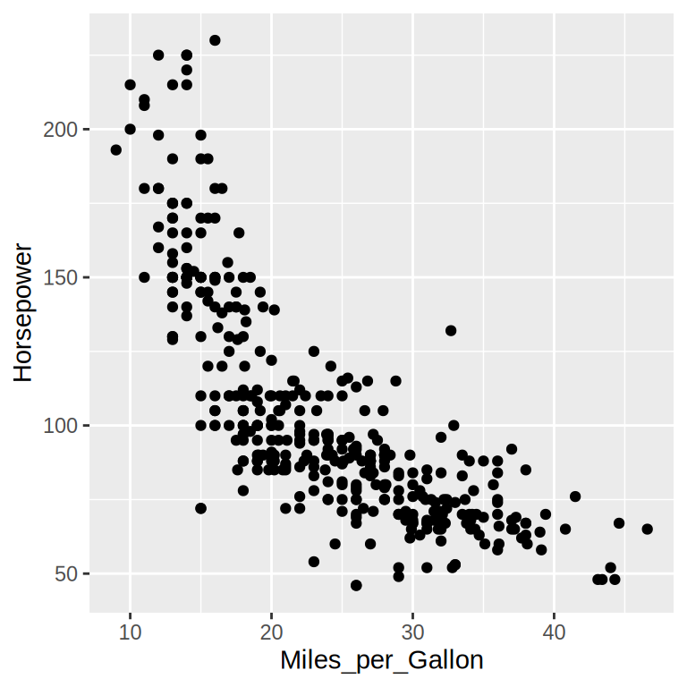
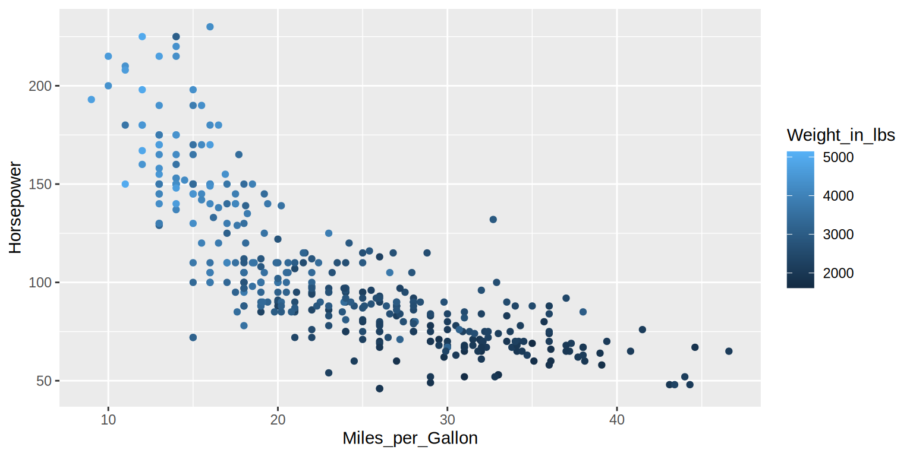

import altair as alt
import pandas as pd
url = 'https://raw.githubusercontent.com/joelostblom/teaching-datasets/main/cars.csv'
cars = pd.read_csv(url)
cars3 Individual observations
3.1 Why bother?
. Rather than summarizing groups of observations, we’re simply . As we saw in the introductory chapter, even this simple form of visualization can .
3.2 Creating our first chart
It’s time to start coding! First, we need some example data to visualize. Libraries that implement a grammar of graphics generally work with “tidy” data. In tidy data, each column represents a variable (also called a field), and each row represents an observation. We will start by loading a small historical dataset with information about cars’ design, performance, and fuel efficiency.
| Name | Miles_per_Gallon | Cylinders | Displacement | Horsepower | Weight_in_lbs | Acceleration | Year | Origin | |
|---|---|---|---|---|---|---|---|---|---|
| str | float64 | str | float64 | float64 | int64 | float64 | str | str | |
| 0 | chevrolet chevelle malibu | 18.0 | Eight | 307.0 | 130.0 | 3504 | 12.0 | 1970-01-01 | USA |
| 1 | buick skylark 320 | 15.0 | Eight | 350.0 | 165.0 | 3693 | 11.5 | 1970-01-01 | USA |
| 2 | plymouth satellite | 18.0 | Eight | 318.0 | 150.0 | 3436 | 11.0 | 1970-01-01 | USA |
| ... | ... | ... | ... | ... | ... | ... | ... | ... | ... |
| 396 | dodge rampage | 32.0 | Four | 135.0 | 84.0 | 2295 | 11.6 | 1982-01-01 | USA |
| 397 | ford ranger | 28.0 | Four | 120.0 | 79.0 | 2625 | 18.6 | 1982-01-01 | USA |
| 398 | chevy s-10 | 31.0 | Four | 119.0 | 82.0 | 2720 | 19.4 | 1982-01-01 | USA |
399 rows × 9 columns
library(tidyverse)
url <- 'https://raw.githubusercontent.com/joelostblom/teaching-datasets/main/cars.csv'
cars <- read_csv(url)
cars| Name | Miles_per_Gallon | Cylinders | Displacement | Horsepower | Weight_in_lbs | Acceleration | Year | Origin | |
|---|---|---|---|---|---|---|---|---|---|
| chr | dbl | chr | dbl | dbl | dbl | dbl | date | chr | |
| 0 | chevrolet chevelle malibu | 18.0 | Eight | 307.0 | 130.0 | 3504.0 | 12.0 | 1970-01-01 | USA |
| 1 | buick skylark 320 | 15.0 | Eight | 350.0 | 165.0 | 3693.0 | 11.5 | 1970-01-01 | USA |
| 2 | plymouth satellite | 18.0 | Eight | 318.0 | 150.0 | 3436.0 | 11.0 | 1970-01-01 | USA |
| ... | ... | ... | ... | ... | ... | ... | ... | ... | ... |
| 396 | dodge rampage | 32.0 | Four | 135.0 | 84.0 | 2295.0 | 11.6 | 1982-01-01 | USA |
| 397 | ford ranger | 28.0 | Four | 120.0 | 79.0 | 2625.0 | 18.6 | 1982-01-01 | USA |
| 398 | chevy s-10 | 31.0 | Four | 119.0 | 82.0 | 2720.0 | 19.4 | 1982-01-01 | USA |
399 rows × 9 columns
Looking at the table above, we might start to generate questions about our data. Perhaps the cars with the best fuel efficiency are also the cars with the least powerful engines (i.e. do the cars with the highest Miles_per_Gallon also have the lowest Horsepower)? This sounds reasonable since a more powerful engine generally uses more fuel. Let’s see if we can answer this question with a visualization. To see how these two variables relate to each other, we can map them to two visual channels in the chart, such as x and y.
First, we create a canvas linked to the cars dataframe via alt.Chart(cars). Then, we indicate what kind of geometric mark we want to use to represent the data. Here, it is suitable to show the data as points using mark_point():
alt.Chart(cars).mark_point().encode(
x='Miles_per_Gallon',
y='Horsepower'
)First, we create a canvas linked to the cars dataframe via ggplot(cars). Then, we indicate what kind of geometric mark we want to use to represent the data. Here, it is suitable to show the data as points using geom_point():
ggplot(cars, aes(x = Miles_per_Gallon, y = Horsepower)) +
geom_point()Warning: Removed 14 rows containing missing values or values outside the scale range
(`geom_point()`).
Different defaults
You can see that there are some made by each library.
Different styles have different advantages, and they are easy to customize to look however you want, which we will learn about later.
Including the origin (x = 0, y = 0) or zooming in on the data can both be sensible defaults in different contexts, which we will also learn more about in later chapters.
Observations with missing values in either Miles_per_Gallon or Horsepower are omitted because they cannot be positioned on both axes. Some libraries explicitly warn about this and others don’t.
Does the chart answer our question? That’s up to you to explore in the exercise below!
Our conclusion above makes sense for the data we showed in the chart. But remember that there are other variables in our dataframe; let’s show it again as a reminder.
| Name | Miles_per_Gallon | Cylinders | Displacement | Horsepower | Weight_in_lbs | Acceleration | Year | Origin | |
|---|---|---|---|---|---|---|---|---|---|
| str | float64 | str | float64 | float64 | int64 | float64 | str | str | |
| 0 | chevrolet chevelle malibu | 18.0 | Eight | 307.0 | 130.0 | 3504 | 12.0 | 1970-01-01 | USA |
| 1 | buick skylark 320 | 15.0 | Eight | 350.0 | 165.0 | 3693 | 11.5 | 1970-01-01 | USA |
| 2 | plymouth satellite | 18.0 | Eight | 318.0 | 150.0 | 3436 | 11.0 | 1970-01-01 | USA |
| ... | ... | ... | ... | ... | ... | ... | ... | ... | ... |
| 396 | dodge rampage | 32.0 | Four | 135.0 | 84.0 | 2295 | 11.6 | 1982-01-01 | USA |
| 397 | ford ranger | 28.0 | Four | 120.0 | 79.0 | 2625 | 18.6 | 1982-01-01 | USA |
| 398 | chevy s-10 | 31.0 | Four | 119.0 | 82.0 | 2720 | 19.4 | 1982-01-01 | USA |
399 rows × 9 columns
For example, it seems reasonable that the weight of the car could impact fuel efficiency, since more energy is needed to accelerate a heavier car to the same speed. To explore Weight_in_lbs together with the other two variables, we can according to this column. When using the color encoding channel, high-level visualization libraries will . Since the Weight_in_lbs column contains continuous numerical data, a continuous gradient will be used here.
Here, we add the color encoding to the chart so that we can see how all three variables relate to each other. Note that the largest value in the Weight_in_lbs column is represented with a dark color, which contrasts strongly with the light background of the chart.
alt.Chart(cars).mark_point().encode(
x='Miles_per_Gallon',
y='Horsepower',
color='Weight_in_lbs'
)Here, we add the color encoding to the chart so that we can see how all three variables relate to each other. The default color gradient runs from dark blue for lower weights to light blue for higher weights, since light colors have the highest contrast to the chart’s dark background.
ggplot(cars, aes(x = Miles_per_Gallon, y = Horsepower, color = Weight_in_lbs)) +
geom_point()Warning: Removed 14 rows containing missing values or values outside the scale range
(`geom_point()`).
Making space
Notice the difference in how the legend is added in the two libraries. In Altair, the overall width of the figure increases to keep the dimensions of the chart area the same, whereas in ggplot, the width of the figure stays constant, so the chart area narrows to accommodate the legend. In general, we don’t want the chart area to shrink just because we are adding a legend, so here we would need to manually increase the width of the ggplot chart, which we will learn about in a future chapter.
As a final note, you might have noticed that . This is an important consideration, and we will dive deeper into which visual channels are the most effective at presenting information in the next chapter.